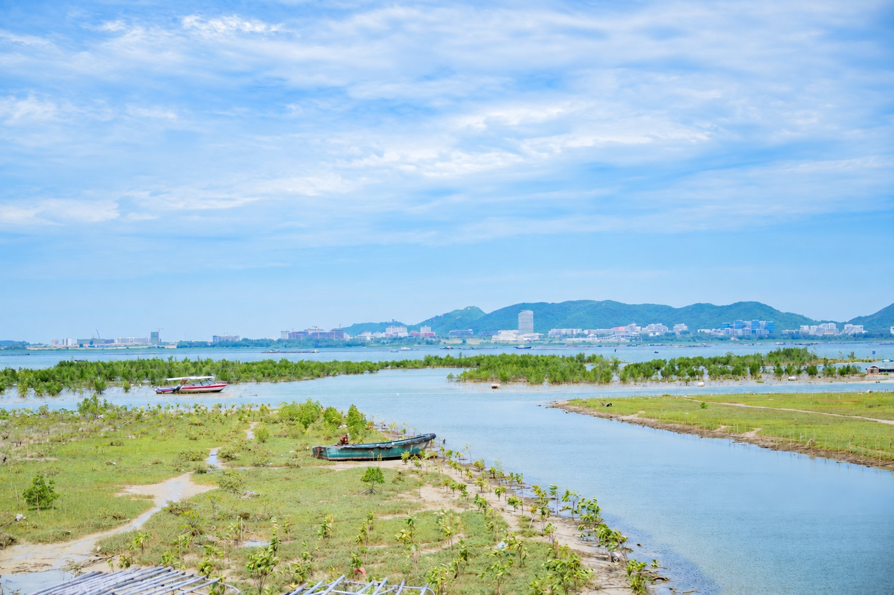

Social-Ecological System Sustainability Lab
SESuS Lab
Our research applies social-ecological systems and ecological economics approaches to understand interactions between societies and ecosystems under global environmental change. We develop integrated approaches to coastal conservation and restoration that link biodiversity, climate mitigation and adaptation, economic development and social well-being.
Research Interests
Read our research overview →
Principal Investigator
Professor Jie Su
College of the Environment and Ecology and Institute for Ocean and Coastal Development, Xiamen University.
Meet the team →